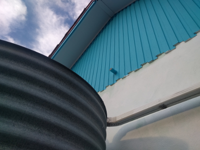
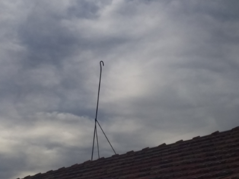

I recently purchased my grandfather's house which he built himself in the mid 1950s. My fiancé and I were painting the house and we came across a pipe sticking out of the wall just above the rain water tank.

Looking inside the roof we discoved that this pipe came from a large metal tray that was sitting underneath the hot water system. The manufacturers of the hot water system never intended for the tank to leak1 but it's something my grand father clearly though about and designed for just incase.
Simiarly on the roof there is a copper pipe that looks a bit like a shepherd's crook that comes out of the hot water system.

The idea is that if the tank somehow got overfilled and then the water got boiled and expanded, rather than the tank exploding with the pressure, the boiling water would be forced up the pipe and pour out on the roof. As far as I'm aware the tank has never been overfilled or over boiled, but it's good to have a contingency just incase.
In IT we are getting better at designing for failure, things like RAID or small office routers that now come with both DSL and a 4G modem so if the DSL dropps out it switches over.
In Information Security we have ideas like defence in depth and layered security. They are a good start but we need to keep working on them.
-
And to their credit the tank is older than I am and still going well. ↩